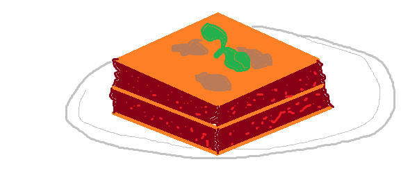

Homepage
Simple Lasagna

This easy recipe allows anyone with too much time and hunger to create a lasagna that is at least edible.
The ingredients are cheap and the steps are quick to read!
Also no bechamel sauce. Because I don't want to put too much effort into this.
ingredients
- Pasta plates
- Ground meat
- Tomato sauce
- Some cheese
- A single leaf of basil
How to cook some lasagna
- Spice the ground meat with enough salt and pepper. When in doubt, put more salt, pepper and other spices into this bland ingredient
- Turn on your stove and heat a pan
- Put the ground meat into the pan until it is nice and brown
- Once the meat is ready, pour the tomato sauce on top of it and mix
- Get a lasagna bowl and layer up like this
- Pasta plate
- meat
- repeat with step 5.1 until you run out of meat
- Top the lasagna with a final pasta plate
- Add cheese on top of your lasagna
- Put the lasagna into the oven for 30min at 180°C
- Once the lasagna is out of the oven, decorate it with a stratigically placed leaf of basil
- Order some real lasagna next time
And voilá! Making lasagna is just that easy!